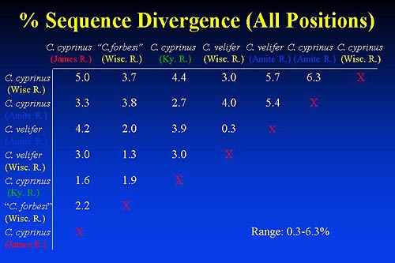

|

- All cyprinus types were very divergent from each other (1.6-6.3%)
- The smallest amount of sequence divergence between cyprinus types as
1.6%(Ky/James), while the most diverence was between (Amite/Wisconsin)
- The two quillback types from the same locality: C. cyprinus (Wisconsin
River) and C. forbesi = 3.7%
- C. cyprinus (Amite) and C. forbesi differed by 3.8%
Percent Sequence Divergence
Third Position Only
- Large divergence between C. cyprinus (Wisconsin River) and C. forbesi = 4.1%
- Largest divergence between C. cyrpinus (Amite River) and (Wisconsin River) = 5.0%
- Amite River C. cyprinus and C. forbesi also differed by 5.0%
- Smallest divergence was 2.4% between C. forbesi and James River.
Prev Slide | Next Slide
|

Summary
Introduction
Carpiodes
Ictiobus
Distribution
Field Work
External Morphology
Morphometrics
Allozymes & Isozymes
mtDNA Sequencing
Literature Cited
Publications & Presentations
|